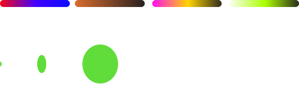

Music has the power to trigger memories, for example, listening to a specific song may bring you back to
a specific moment in time, or another song may remind you of a specific person.
All memories also have audio attached to them. For example, Steve Jobs announcing the first iPhone in
2007.
What would it look like to visualize these audios?
Visualizing these auditory experiences provides a new way to experience and remember the memory. Perhaps
it could even deepen our understanding of the memory or enhance the emotional connection.
KEY
